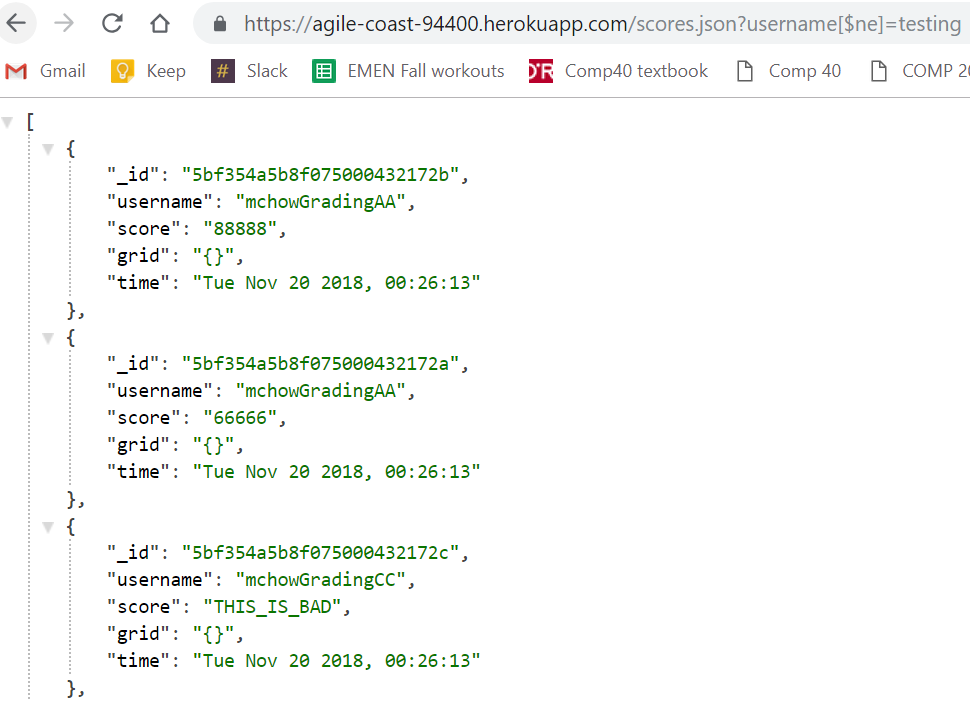
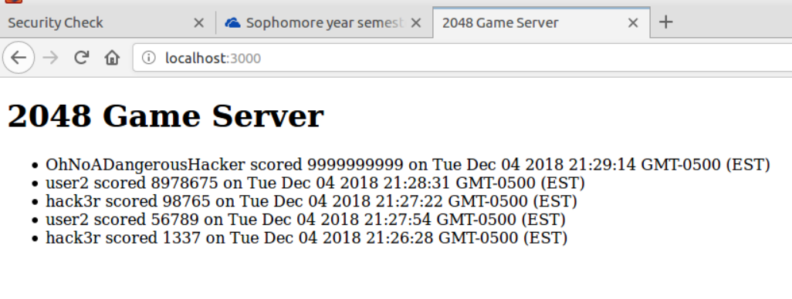

Comp 20 Assignment 4: Security
By: Conner (Conrad) Walsh
Introduction
The product: a 2048 game server, used for storing the scores, usernames, final grids, and creation dates of 2048 scores.
I was hired to find security vulnerabilities in this server.
Note: I used my partner's (Harley White) database for the first issue found, and Ming Chow's code for all other issues.
Methodology
I began by looking for the most basic security flaws (cross-site-scripting, code injection, etc). I tried posting various kinds of data to the /submit path using curl, as well as adding various keys and operators to the /scores.json path in a web browser.
Abstract of Findings
- Code injection: the database can be queried in unexpected ways to return other users' data.
- cURL injection: unexpected entries can be entered into the database from malicious sources.
- Cross-site-scripting (XSS): malicious code can be placed into values in the database which, when displayed by a browser, is then run.
Issues Found
Issue: NoSQL injection
- Location: index.js, the /scores.json path
- Severity: High.
An attacker can easily see all the data in the database, including other user's data. If the database were holding any sensitive data, it could be seen by people it was not meant for.
- Description: By inserting [$ne] into the query string, I was able to see all the scores that had a username not equal to my query string, meaning that I saw all other user data.
- Proof:

- Resolution: The easiest way to prevent this kind of attack would be to validate user data using a middleware like Joi in Celebrate. For example, you could validate the username using "username: Joi.string().optional()" (provided you include the right libraries of course).
Issue: cURL injection
- Location: server.js, the /scores.json path
- Severity: Medium.
An attacker can insert their own data into the database from any machine, which in this case means they can cheat and achieve a high score. However, this does not compromise other user's data without the use of other techniques.
- Description: Using cURL, I was able to insert a fake username/score to the database. This is indicative of a much larger security problem, which is that there is no method of authentication to ensure the data comes from an actual game of 2048.
- Proof:

- Resolution: There should be some method of validation, like only allowing post requests to /submit from trusted sources.
Example: "res.header('Access-Control-Allow-Origin', 'example.com');" rather than "response.header("Access-Control-Allow-Origin", "*");" The first option allows only requests from 'example.com' rather than from all origins.
Issue: Cross-site-scripting (XSS)
Conclusion
Though the security flaws listed here are basic, they are very dangerous indeed. NoSQL injection can expose sensitive user data, and curl injection can be used to place malicious code into a website through cross-site-scripting. However, because they are so basic and well-known, they are fairly easy to protect against (at least somewhat). There are libraries that can be used to prevent injection (Celebrate with Joi) and curl injection (cors), and cross-site-scripting can be mostly prevented with a simple replace function.
References
Most of the information came from class notes and examples by Ming Chow. The online sources I used included:
- https://stackoverflow.com/questions/7067966/how-to-allow-cors
- https://www.owasp.org/index.php/Testing_for_NoSQL_injection
- https://blog.sqreen.io/prevent-nosql-injections-mongodb-node-js/